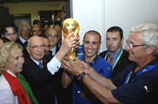

Футбол
Футбол —
командный вид спорта, в котором целью является забить мяч в ворота соперника ногами или другими частями
тела (кроме рук) большее количество раз, чем команда соперника. В настоящее время самый популярный и
массовый вид спорта в мире.
Каждая команда состоит максимум из одиннадцати игроков (без учёта запасных), один из которых должен быть
вратарём. Правила неофициальных соревнований могут уменьшить количество игроков, максимум до 7. Вратари
являются единственными игроками, которым позволено играть руками при условии: они делают это в пределах
штрафной площади у своих собственных ворот. Хотя есть различные позиции на поле, эти позиции не
обязательны.
Отдельная футбольная игра называется матч, который в свою очередь состоит из двух таймов по 45 минут.
Пауза между первым и вторым таймами составляет 15 минут, в течение которой команды отдыхают, а по её
окончании меняются воротами.
Цель игры — забить мяч в ворота противника, сделать это как можно большее количество раз и постараться
не допустить гола в свои ворота. Матч выигрывает команда, забившая большее количество голов.
В случае, если в течение двух таймов команды забили одинаковое количество голов (ничья), то или
фиксируется ничья, или победитель выявляется согласно установленному регламенту матча. В этом случае
может быть назначено дополнительное время — ещё два тайма по 15 минут каждый. Как правило, между
основным и дополнительным временем матча командам предоставляется перерыв. Между дополнительными таймами
командам даётся лишь время на смену сторон. Одно время в футболе существовало правило, по которому
победителем объявлялась команда, первой забившая гол (правило «золотого гола») или выигрывавшая по
окончании любого из дополнительных таймов (правило «серебряного гола»). В настоящий момент
дополнительное время либо не играется вовсе, либо играется в полном объёме (2 тайма по 15 минут). Если в
течение дополнительного времени победителя выявить не удаётся, проводится серия послематчевых пенальти,
не являющихся частью матча: по воротам противника с расстояния 11 метров пробивается по пять ударов
разными игроками. Если количество забитых пенальти у обеих команд будет равным, тогда пробиваются по
одной паре пенальти, пока не будет выявлен победитель. Ли́га чемпио́нов УЕФА (англ. UEFA Champions
League) — ежегодный международный турнир по футболу, организованный Союзом европейских футбольных
ассоциаций (УЕФА) среди клубов высших дивизионов в Европе. Самый престижный европейский клубный
футбольный турнир.